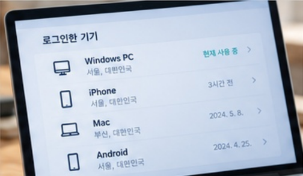
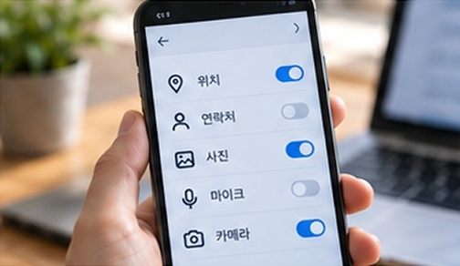

01
서비스마다 다른 비밀번호
한 곳에서 노출된 비밀번호가
다른 계정에 사용되지
않도록,
계정마다 다르게 설정하세요.
01 캠페인 소개
택배를 버릴 때, 사진을 올릴 때,
우리는 어떤 정보를 남기고
있을까요?
캠페인 영상
영상 준비 중ABOUT THE CAMPAIGN
내정보지킴이는 일상 속 개인정보의 소중함을 알리고
보호 습관을
함께 만드는 캠페인입니다.
사진과 택배 송장, 온라인 기록에도
나를 알아볼 수 있는 정보가 남아 있습니다.
무심코 공유하거나
버리기 전, 개인정보가 담겨 있는지 한 번 더 확인해 주세요.
작은
관심과 실천이 나와 가족의 소중한 일상을 지키는 시작이 됩니다.
오늘부터
내 정보의 주인이 되어 안전한 생활 습관을 만들어 보세요.
PRACTICAL STEPS
간단한 설정만으로도 계정을 더 안전하게 보호할 수 있습니다.
한 곳에서 노출된 비밀번호가
다른 계정에 사용되지
않도록,
계정마다 다르게 설정하세요.
비밀번호 외에 추가 확인 절차를
설정해 계정을
보호하세요.
인증번호는 다른 사람에게 알려주지 마세요.

낯선 접속 기록과 사용하지 않는
로그인 기기가 없는지
살펴보세요.
공용 기기에서는 사용 후 로그아웃하세요.
세 가지 설정, 한 번에 점검하세요.
작은 점검이 내 계정을 지킵니다.계정마다 고유한 비밀번호 사용
2단계 인증 설정과 복구 수단 확인
낯선 기기 확인 · 공용 기기 로그아웃
PRACTICAL STEPS
공유하고, 버리고, 사용하는 순간마다 내 정보가 남아 있는지 확인하세요.
사진 속 주소 · 얼굴 · 차량번호와
위치 태그를 확인하세요.
게시물 공개 범위도 함께 점검하세요.
송장의 이름 · 주소 · 연락처를 지우고,
개인정보가 담긴 서류는
알아보기 어렵게 파쇄해 버리세요.

위치 · 연락처 · 사진 접근 권한을
꼭 필요한 범위로 줄이세요.
사용하지 않는 앱의 권한도 점검하세요.
공유 전, 폐기 전, 사용 전 한 번 더.
작은 확인이 내 정보를 지킵니다.사진 속 정보 · 위치 태그 점검
송장과 서류의 개인정보 삭제
앱 접근 권한 · 연결 계정 재점검
PRACTICAL STEPS
의심스러운 연락은 먼저 멈추고, 유출을 알게 된 순간에는 대응을 시작하세요.
출처가 불분명한 링크는 누르지 말고,
금전이나 개인정보를 요구하면
공식 앱 · 사이트에서 직접 확인하세요.
비밀번호와 복구 수단을 확인하고,
낯선 로그인 기기는 로그아웃하세요.
2단계 인증도 함께 설정하세요.
의심 메시지와 피해 내용을 보관하고,
발생 시각과 상황을 기록하세요.
공식 신고 · 상담 창구에 도움을 요청하세요.
멈추고 확인, 그리고 필요한 대응까지.
한 번 더 확인하는 게 피해를 예방합니다.링크 · 첨부파일은 확인 후 열기
비밀번호 변경 · 로그인 기기 점검
증거 보관 후 신고 · 상담